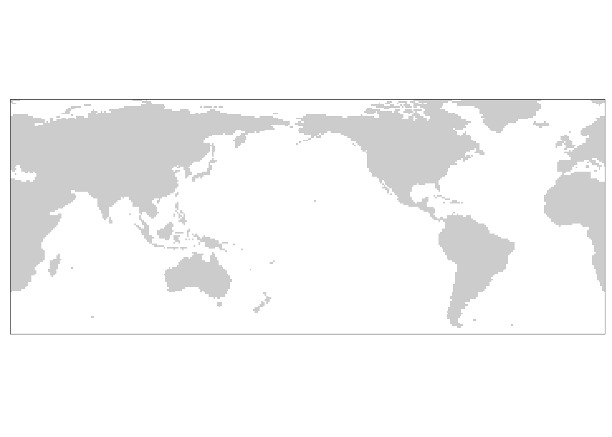
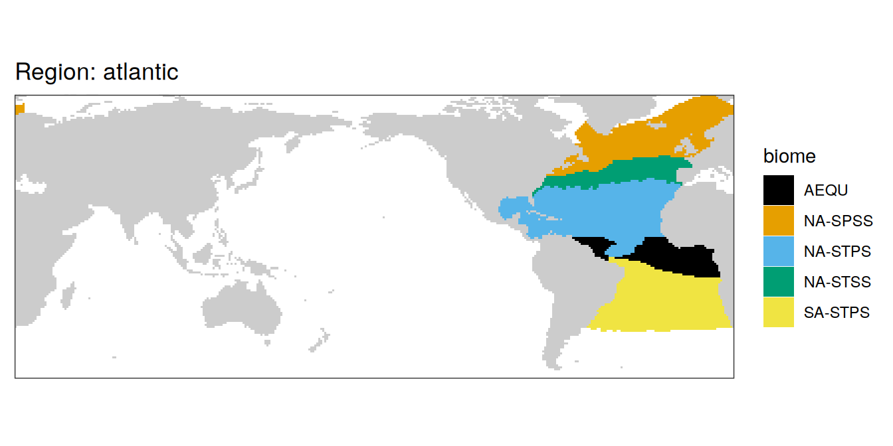
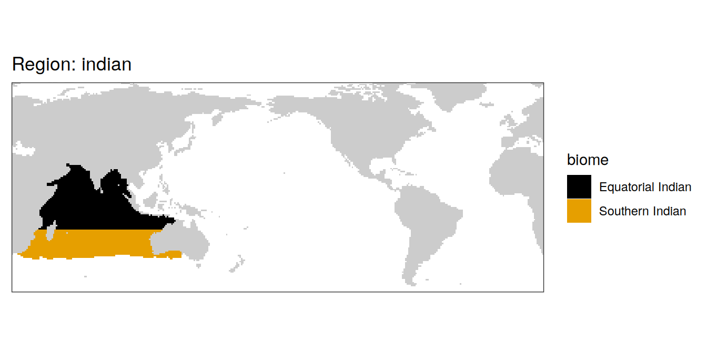
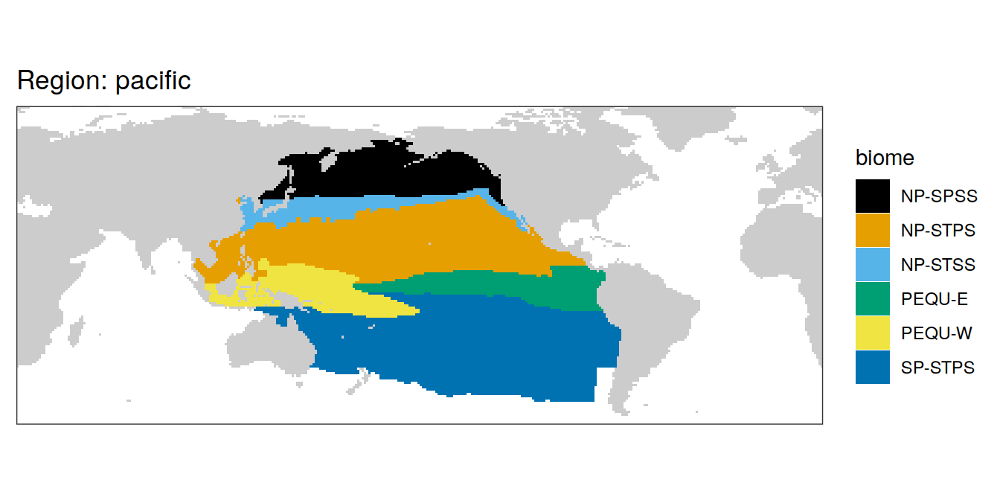
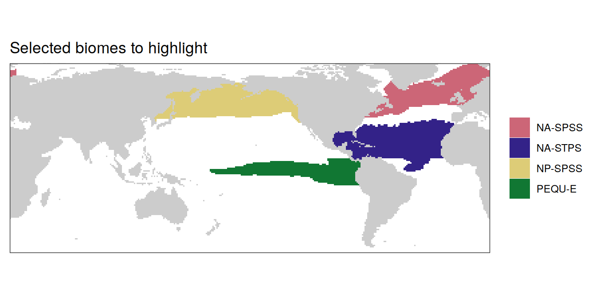

Biome mask
Jens Daniel Müller
13 June, 2024
Last updated: 2024-06-13
Checks: 7 0
Knit directory:
heatwave_co2_flux_2023/analysis/
This reproducible R Markdown analysis was created with workflowr (version 1.7.0). The Checks tab describes the reproducibility checks that were applied when the results were created. The Past versions tab lists the development history.
Great! Since the R Markdown file has been committed to the Git repository, you know the exact version of the code that produced these results.
Great job! The global environment was empty. Objects defined in the global environment can affect the analysis in your R Markdown file in unknown ways. For reproduciblity it’s best to always run the code in an empty environment.
The command set.seed(20240307) was run prior to running
the code in the R Markdown file. Setting a seed ensures that any results
that rely on randomness, e.g. subsampling or permutations, are
reproducible.
Great job! Recording the operating system, R version, and package versions is critical for reproducibility.
Nice! There were no cached chunks for this analysis, so you can be confident that you successfully produced the results during this run.
Great job! Using relative paths to the files within your workflowr project makes it easier to run your code on other machines.
Great! You are using Git for version control. Tracking code development and connecting the code version to the results is critical for reproducibility.
The results in this page were generated with repository version 2f0c1f7. See the Past versions tab to see a history of the changes made to the R Markdown and HTML files.
Note that you need to be careful to ensure that all relevant files for
the analysis have been committed to Git prior to generating the results
(you can use wflow_publish or
wflow_git_commit). workflowr only checks the R Markdown
file, but you know if there are other scripts or data files that it
depends on. Below is the status of the Git repository when the results
were generated:
Ignored files:
Ignored: .Rproj.user/
Ignored: data/
Unstaged changes:
Modified: analysis/child/pCO2_product_preprocessing.Rmd
Modified: code/Workflowr_project_managment.R
Note that any generated files, e.g. HTML, png, CSS, etc., are not included in this status report because it is ok for generated content to have uncommitted changes.
These are the previous versions of the repository in which changes were
made to the R Markdown (analysis/biomes.Rmd) and HTML
(docs/biomes.html) files. If you’ve configured a remote Git
repository (see ?wflow_git_remote), click on the hyperlinks
in the table below to view the files as they were in that past version.
| File | Version | Author | Date | Message |
|---|---|---|---|---|
| html | 3148fef | jens-daniel-mueller | 2024-06-13 | Build site. |
| html | a60be97 | jens-daniel-mueller | 2024-06-12 | Build site. |
| html | d46002d | jens-daniel-mueller | 2024-06-12 | manual commit |
| html | 03c415f | jens-daniel-mueller | 2024-06-11 | Build site. |
| html | 5261667 | jens-daniel-mueller | 2024-06-11 | manual commit |
| Rmd | dfc33c9 | jens-daniel-mueller | 2024-06-11 | manual commit |
| html | 6954c65 | jens-daniel-mueller | 2024-06-06 | Build site. |
| html | 5f7453c | jens-daniel-mueller | 2024-05-25 | Build site. |
| Rmd | 76f3c0b | jens-daniel-mueller | 2024-05-25 | SO processed, but not included in global integrals |
| Rmd | b58f588 | jens-daniel-mueller | 2024-05-24 | manual commit |
| html | 009791f | jens-daniel-mueller | 2024-05-14 | Build site. |
| Rmd | aeaee82 | jens-daniel-mueller | 2024-05-13 | rebuild entire website with focus on extended NH |
| html | 7f9c687 | jens-daniel-mueller | 2024-04-23 | Build site. |
| html | ce4e2a6 | jens-daniel-mueller | 2024-04-17 | Build site. |
| html | 58e3680 | jens-daniel-mueller | 2024-04-11 | Build site. |
| html | dfcf790 | jens-daniel-mueller | 2024-04-11 | Build site. |
| html | 139bc97 | jens-daniel-mueller | 2024-04-11 | manual deletion of files |
| html | 69dc18c | jens-daniel-mueller | 2024-04-04 | Build site. |
| html | c9d994c | jens-daniel-mueller | 2024-04-04 | Build site. |
| html | 40cb158 | jens-daniel-mueller | 2024-04-03 | Build site. |
| html | a83c8fc | jens-daniel-mueller | 2024-04-03 | Build site. |
| html | 6bb7ce2 | jens-daniel-mueller | 2024-03-25 | Build site. |
| html | 4589270 | jens-daniel-mueller | 2024-03-24 | Build site. |
| html | dd640bd | jens-daniel-mueller | 2024-03-24 | Build site. |
| Rmd | 6358178 | jens-daniel-mueller | 2024-03-24 | seperate biome mask |
| html | 1d6b4c8 | jens-daniel-mueller | 2024-03-24 | Build site. |
| Rmd | 36b12ec | jens-daniel-mueller | 2024-03-24 | seperate biome mask |
| html | 78465dc | jens-daniel-mueller | 2024-03-24 | Build site. |
| Rmd | 900b8d0 | jens-daniel-mueller | 2024-03-24 | seperate biome mask |
| Rmd | a7ea840 | jens-daniel-mueller | 2024-03-24 | manual commit |
| html | 62ea4dd | jens-daniel-mueller | 2024-03-24 | Build site. |
| Rmd | 459e41d | jens-daniel-mueller | 2024-03-24 | biomes added to ancillary |
center <- -160
boundary <- center + 180
target_crs <- paste0("+proj=robin +over +lon_0=", center)
# target_crs <- paste0("+proj=eqearth +over +lon_0=", center)
# target_crs <- paste0("+proj=eqearth +lon_0=", center)
# target_crs <- paste0("+proj=igh_o +lon_0=", center)
worldmap <- ne_countries(scale = 'small',
type = 'map_units',
returnclass = 'sf')
worldmap <- worldmap %>% st_break_antimeridian(lon_0 = center)
worldmap_trans <- st_transform(worldmap, crs = target_crs)
# ggplot() +
# geom_sf(data = worldmap_trans)
coastline <- ne_coastline(scale = 'small', returnclass = "sf")
coastline <- st_break_antimeridian(coastline, lon_0 = 200)
coastline_trans <- st_transform(coastline, crs = target_crs)
# ggplot() +
# geom_sf(data = worldmap_trans, fill = "grey", col="grey") +
# geom_sf(data = coastline_trans)
bbox <- st_bbox(c(xmin = -180, xmax = 180, ymax = 65, ymin = -78), crs = st_crs(4326))
bbox <- st_as_sfc(bbox)
bbox_trans <- st_break_antimeridian(bbox, lon_0 = center)
bbox_graticules <- st_graticule(
x = bbox_trans,
crs = st_crs(bbox_trans),
datum = st_crs(bbox_trans),
lon = c(20, 20.001),
lat = c(-78,65),
ndiscr = 1e3,
margin = 0.001
)
bbox_graticules_trans <- st_transform(bbox_graticules, crs = target_crs)
rm(worldmap, coastline, bbox, bbox_trans)
# ggplot() +
# geom_sf(data = worldmap_trans, fill = "grey", col="grey") +
# geom_sf(data = coastline_trans) +
# geom_sf(data = bbox_graticules_trans)
lat_lim <- ext(bbox_graticules_trans)[c(3,4)]*1.002
lon_lim <- ext(bbox_graticules_trans)[c(1,2)]*1.005
# ggplot() +
# geom_sf(data = worldmap_trans, fill = "grey90", col = "grey90") +
# geom_sf(data = coastline_trans) +
# geom_sf(data = bbox_graticules_trans, linewidth = 1) +
# coord_sf(crs = target_crs,
# ylim = lat_lim,
# xlim = lon_lim,
# expand = FALSE) +
# theme(
# panel.border = element_blank(),
# axis.text = element_blank(),
# axis.ticks = element_blank()
# )
latitude_graticules <- st_graticule(
x = bbox_graticules,
crs = st_crs(bbox_graticules),
datum = st_crs(bbox_graticules),
lon = c(20, 20.001),
lat = c(-60,-30,0,30,60),
ndiscr = 1e3,
margin = 0.001
)
latitude_graticules_trans <- st_transform(latitude_graticules, crs = target_crs)
latitude_labels <- data.frame(lat_label = c("60°N","30°N","Eq.","30°S","60°S"),
lat = c(60,30,0,-30,-60)-4, lon = c(35)-c(0,2,4,2,0))
latitude_labels <- st_as_sf(x = latitude_labels,
coords = c("lon", "lat"),
crs = "+proj=longlat")
latitude_labels_trans <- st_transform(latitude_labels, crs = target_crs)
# ggplot() +
# geom_sf(data = worldmap_trans, fill = "grey", col = "grey") +
# geom_sf(data = coastline_trans) +
# geom_sf(data = bbox_graticules_trans) +
# geom_sf(data = latitude_graticules_trans,
# col = "grey60",
# linewidth = 0.2) +
# geom_sf_text(data = latitude_labels_trans,
# aes(label = lat_label),
# size = 3,
# col = "grey60")Read data
In this study, we use the biome mask from RECCAP2, a modification of the original mask developed by Fay and McKinley (2014).
path_reccap2 <-
"/nfs/kryo/work/datasets/gridded/ocean/interior/reccap2/"print("RECCAP2_region_masks_all_v20221025.nc")[1] "RECCAP2_region_masks_all_v20221025.nc"biome_mask <-
read_ncdf(
paste(
path_reccap2,
"supplementary/RECCAP2_region_masks_all_v20221025.nc",
sep = ""
)
) %>%
as_tibble()
biome_mask <-
biome_mask %>%
mutate(lon = if_else(lon < 20, lon + 360, lon))Basemap and landmask
land_mask <- biome_mask %>%
filter(seamask == 0) %>%
select(lon, lat)
map <- ggplot(land_mask,
aes(lon, lat)) +
geom_tile(fill = "grey80") +
scale_y_continuous(breaks = seq(-60,60,30)) +
scale_x_continuous(breaks = seq(0,360,60)) +
coord_quickmap(expand = 0, ylim = c(-60, 80)) +
theme(axis.title = element_blank(),
axis.text = element_blank(),
axis.ticks = element_blank())
map
| Version | Author | Date |
|---|---|---|
| a60be97 | jens-daniel-mueller | 2024-06-12 |
| de65385 | jens-daniel-mueller | 2024-06-12 |
| 03c415f | jens-daniel-mueller | 2024-06-11 |
| 0a7394b | jens-daniel-mueller | 2024-06-11 |
| 009791f | jens-daniel-mueller | 2024-05-14 |
| dfcf790 | jens-daniel-mueller | 2024-04-11 |
| d5075c5 | jens-daniel-mueller | 2024-04-11 |
| 1d6b4c8 | jens-daniel-mueller | 2024-03-24 |
map %>%
write_rds(paste0("../data/","map.rds"))Global ocean
Global ocean estimates are integrated or averaged across the following areas.
biome_mask <- biome_mask %>%
filter(seamask == 1) %>%
select(lon, lat, atlantic:southern) %>%
pivot_longer(atlantic:southern,
names_to = "region",
values_to = "biome") %>%
mutate(biome = as.character(biome))
biome_mask <- biome_mask %>%
filter(biome != "0")
biome_mask <- biome_mask %>%
mutate(biome = paste(region, biome, sep = "_"))
biome_mask <- biome_mask %>%
mutate(biome = case_when(
biome == "atlantic_1" ~ "NA-SPSS",
biome == "atlantic_2" ~ "NA-STSS",
biome == "atlantic_3" ~ "NA-STPS",
biome == "atlantic_4" ~ "AEQU",
biome == "atlantic_5" ~ "SA-STPS",
# biome == "atlantic_6" ~ "MED",
biome == "pacific_1" ~ "NP-SPSS",
biome == "pacific_2" ~ "NP-STSS",
biome == "pacific_3" ~ "NP-STPS",
biome == "pacific_4" ~ "PEQU-W",
biome == "pacific_5" ~ "PEQU-E",
biome == "pacific_6" ~ "SP-STSS",
biome == "indian_1" ~ "Arabian Sea",
biome == "indian_2" ~ "Bay of Bengal",
biome == "indian_3" ~ "Equatorial Indian",
biome == "indian_4" ~ "Southern Indian",
# biome == "arctic_1" ~ "ARCTIC-ICE",
# biome == "arctic_2" ~ "NP-ICE",
# biome == "arctic_3" ~ "NA-ICE",
# biome == "arctic_4" ~ "Barents",
# str_detect(biome, "arctic") ~ "Arctic",
biome == "southern_1" ~ "SO-STSS",
biome == "southern_2" ~ "SO-SPSS",
# biome == "southern_3" ~ "SO-ICE",
TRUE ~ "other"
))
biome_mask <-
biome_mask %>%
filter(biome != "other")
map +
geom_tile(data = biome_mask,
aes(lon, lat, fill = region)) +
labs(title = "Considered ocean regions") +
scale_fill_muted() +
theme(legend.title = element_blank())
| Version | Author | Date |
|---|---|---|
| a60be97 | jens-daniel-mueller | 2024-06-12 |
| de65385 | jens-daniel-mueller | 2024-06-12 |
| 03c415f | jens-daniel-mueller | 2024-06-11 |
| 0a7394b | jens-daniel-mueller | 2024-06-11 |
| 5f7453c | jens-daniel-mueller | 2024-05-25 |
| 009791f | jens-daniel-mueller | 2024-05-14 |
| dfcf790 | jens-daniel-mueller | 2024-04-11 |
| d5075c5 | jens-daniel-mueller | 2024-04-11 |
| 1d6b4c8 | jens-daniel-mueller | 2024-03-24 |
| 78465dc | jens-daniel-mueller | 2024-03-24 |
biome_mask %>%
distinct(region, biome) %>%
write_rds("../data/region_biomes.rds")Biomes
All biomes
In the following, all individual biomes are plotted by ocean region.
biome_mask %>%
group_split(region) %>%
# head(1) %>%
map( ~ map +
geom_tile(data = .x,
aes(lon, lat, fill = biome)) +
labs(title = paste("Region:", .x$region)) +
scale_fill_okabeito())[[1]]
| Version | Author | Date |
|---|---|---|
| a60be97 | jens-daniel-mueller | 2024-06-12 |
| de65385 | jens-daniel-mueller | 2024-06-12 |
| 03c415f | jens-daniel-mueller | 2024-06-11 |
| 0a7394b | jens-daniel-mueller | 2024-06-11 |
| 009791f | jens-daniel-mueller | 2024-05-14 |
| dfcf790 | jens-daniel-mueller | 2024-04-11 |
| d5075c5 | jens-daniel-mueller | 2024-04-11 |
| 78465dc | jens-daniel-mueller | 2024-03-24 |
[[2]]
| Version | Author | Date |
|---|---|---|
| a60be97 | jens-daniel-mueller | 2024-06-12 |
| de65385 | jens-daniel-mueller | 2024-06-12 |
| 03c415f | jens-daniel-mueller | 2024-06-11 |
| 0a7394b | jens-daniel-mueller | 2024-06-11 |
| 009791f | jens-daniel-mueller | 2024-05-14 |
| dfcf790 | jens-daniel-mueller | 2024-04-11 |
| d5075c5 | jens-daniel-mueller | 2024-04-11 |
| 78465dc | jens-daniel-mueller | 2024-03-24 |
[[3]]
| Version | Author | Date |
|---|---|---|
| a60be97 | jens-daniel-mueller | 2024-06-12 |
| de65385 | jens-daniel-mueller | 2024-06-12 |
| 03c415f | jens-daniel-mueller | 2024-06-11 |
| 0a7394b | jens-daniel-mueller | 2024-06-11 |
| 009791f | jens-daniel-mueller | 2024-05-14 |
| dfcf790 | jens-daniel-mueller | 2024-04-11 |
| d5075c5 | jens-daniel-mueller | 2024-04-11 |
| 78465dc | jens-daniel-mueller | 2024-03-24 |
[[4]]
| Version | Author | Date |
|---|---|---|
| a60be97 | jens-daniel-mueller | 2024-06-12 |
| de65385 | jens-daniel-mueller | 2024-06-12 |
| 03c415f | jens-daniel-mueller | 2024-06-11 |
| 0a7394b | jens-daniel-mueller | 2024-06-11 |
| 5f7453c | jens-daniel-mueller | 2024-05-25 |
| 009791f | jens-daniel-mueller | 2024-05-14 |
| dfcf790 | jens-daniel-mueller | 2024-04-11 |
| d5075c5 | jens-daniel-mueller | 2024-04-11 |
| 78465dc | jens-daniel-mueller | 2024-03-24 |
Key biomes
Following key biomes are highlighted throughout the analysis.
key_biomes <- c("NA-SPSS",
"NA-STPS",
"NP-SPSS",
"PEQU-E")
key_biomes %>%
write_rds("../data/key_biomes.rds")
map +
geom_tile(data = biome_mask %>% filter(biome %in% key_biomes),
aes(lon, lat, fill = biome)) +
labs(title = "Selected biomes to highlight") +
scale_fill_muted() +
theme(legend.title = element_blank())
| Version | Author | Date |
|---|---|---|
| a60be97 | jens-daniel-mueller | 2024-06-12 |
| de65385 | jens-daniel-mueller | 2024-06-12 |
| 03c415f | jens-daniel-mueller | 2024-06-11 |
| 0a7394b | jens-daniel-mueller | 2024-06-11 |
| 009791f | jens-daniel-mueller | 2024-05-14 |
| dfcf790 | jens-daniel-mueller | 2024-04-11 |
| d5075c5 | jens-daniel-mueller | 2024-04-11 |
| 78465dc | jens-daniel-mueller | 2024-03-24 |
biome_mask %>%
select(-biome) %>%
write_rds("../data/region_mask.rds")
biome_mask <-
biome_mask %>%
select(-region)
biome_mask %>%
write_rds("../data/biome_mask.rds")Super biomes
In addition to biomes, we focus our analysis on following combined super biomes.
super_biome_mask <- biome_mask %>%
mutate(
biome = case_when(
str_detect(biome, "NA-") ~ "North Atlantic",
str_detect(biome, "NP-") ~ "North Pacific",
str_detect(biome, "SO-") ~ "Southern Ocean",
TRUE ~ "other"
)
)
super_biome_mask <-
super_biome_mask %>%
filter(biome != "other")
map +
geom_tile(data = super_biome_mask,
aes(lon, lat, fill = biome)) +
labs(title = "Selected super biomes") +
scale_fill_muted() +
theme(legend.title = element_blank())
| Version | Author | Date |
|---|---|---|
| a60be97 | jens-daniel-mueller | 2024-06-12 |
| de65385 | jens-daniel-mueller | 2024-06-12 |
| 03c415f | jens-daniel-mueller | 2024-06-11 |
| 0a7394b | jens-daniel-mueller | 2024-06-11 |
| 5f7453c | jens-daniel-mueller | 2024-05-25 |
| 009791f | jens-daniel-mueller | 2024-05-14 |
| dfcf790 | jens-daniel-mueller | 2024-04-11 |
| d5075c5 | jens-daniel-mueller | 2024-04-11 |
| 78465dc | jens-daniel-mueller | 2024-03-24 |
super_biomes <-
super_biome_mask %>%
distinct(biome) %>%
pull()
super_biomes %>%
write_rds("../data/super_biomes.rds")
super_biome_mask %>%
write_rds("../data/super_biome_mask.rds")
sessionInfo()R version 4.2.2 (2022-10-31)
Platform: x86_64-pc-linux-gnu (64-bit)
Running under: openSUSE Leap 15.5
Matrix products: default
BLAS: /usr/local/R-4.2.2/lib64/R/lib/libRblas.so
LAPACK: /usr/local/R-4.2.2/lib64/R/lib/libRlapack.so
locale:
[1] LC_CTYPE=en_US.UTF-8 LC_NUMERIC=C
[3] LC_TIME=en_US.UTF-8 LC_COLLATE=en_US.UTF-8
[5] LC_MONETARY=en_US.UTF-8 LC_MESSAGES=en_US.UTF-8
[7] LC_PAPER=en_US.UTF-8 LC_NAME=C
[9] LC_ADDRESS=C LC_TELEPHONE=C
[11] LC_MEASUREMENT=en_US.UTF-8 LC_IDENTIFICATION=C
attached base packages:
[1] stats graphics grDevices utils datasets methods base
other attached packages:
[1] khroma_1.9.0 stars_0.6-0 abind_1.4-5
[4] terra_1.7-65 sf_1.0-9 rnaturalearth_0.1.0
[7] geomtextpath_0.1.1 colorspace_2.0-3 marelac_2.1.10
[10] shape_1.4.6 ggforce_0.4.1 metR_0.13.0
[13] scico_1.3.1 patchwork_1.1.2 collapse_1.8.9
[16] forcats_0.5.2 stringr_1.5.0 dplyr_1.1.3
[19] purrr_1.0.2 readr_2.1.3 tidyr_1.3.0
[22] tibble_3.2.1 ggplot2_3.4.4 tidyverse_1.3.2
[25] workflowr_1.7.0
loaded via a namespace (and not attached):
[1] googledrive_2.0.0 ellipsis_0.3.2 class_7.3-20
[4] rprojroot_2.0.3 fs_1.5.2 rstudioapi_0.15.0
[7] proxy_0.4-27 farver_2.1.1 bit64_4.0.5
[10] fansi_1.0.3 lubridate_1.9.0 xml2_1.3.3
[13] codetools_0.2-18 cachem_1.0.6 knitr_1.41
[16] polyclip_1.10-4 jsonlite_1.8.3 gsw_1.1-1
[19] broom_1.0.5 dbplyr_2.2.1 compiler_4.2.2
[22] httr_1.4.4 backports_1.4.1 assertthat_0.2.1
[25] fastmap_1.1.0 gargle_1.2.1 cli_3.6.1
[28] later_1.3.0 tweenr_2.0.2 htmltools_0.5.3
[31] tools_4.2.2 rnaturalearthdata_0.1.0 gtable_0.3.1
[34] glue_1.6.2 Rcpp_1.0.11 RNetCDF_2.6-1
[37] cellranger_1.1.0 jquerylib_0.1.4 vctrs_0.6.4
[40] lwgeom_0.2-10 xfun_0.35 ps_1.7.2
[43] rvest_1.0.3 ncmeta_0.3.5 timechange_0.1.1
[46] lifecycle_1.0.3 googlesheets4_1.0.1 oce_1.7-10
[49] getPass_0.2-2 MASS_7.3-58.1 scales_1.2.1
[52] vroom_1.6.0 hms_1.1.2 promises_1.2.0.1
[55] parallel_4.2.2 yaml_2.3.6 memoise_2.0.1
[58] sass_0.4.4 stringi_1.7.8 highr_0.9
[61] e1071_1.7-12 checkmate_2.1.0 rlang_1.1.1
[64] pkgconfig_2.0.3 systemfonts_1.0.4 evaluate_0.18
[67] lattice_0.20-45 SolveSAPHE_2.1.0 bit_4.0.5
[70] processx_3.8.0 tidyselect_1.2.0 seacarb_3.3.1
[73] magrittr_2.0.3 R6_2.5.1 generics_0.1.3
[76] DBI_1.1.3 pillar_1.9.0 haven_2.5.1
[79] whisker_0.4 withr_2.5.0 units_0.8-0
[82] sp_1.5-1 modelr_0.1.10 crayon_1.5.2
[85] KernSmooth_2.23-20 utf8_1.2.2 tzdb_0.3.0
[88] rmarkdown_2.18 grid_4.2.2 readxl_1.4.1
[91] data.table_1.14.6 callr_3.7.3 git2r_0.30.1
[94] reprex_2.0.2 digest_0.6.30 classInt_0.4-8
[97] httpuv_1.6.6 textshaping_0.3.6 munsell_0.5.0
[100] bslib_0.4.1